RMIT COSC2648 IT Project · Group 1 · 24 September 2026
Photograph a letter. Get your calendar.
Client Prof. Mohammad Patwary Supervisor Dr Golnoush Abaei
For people in vulnerable groups
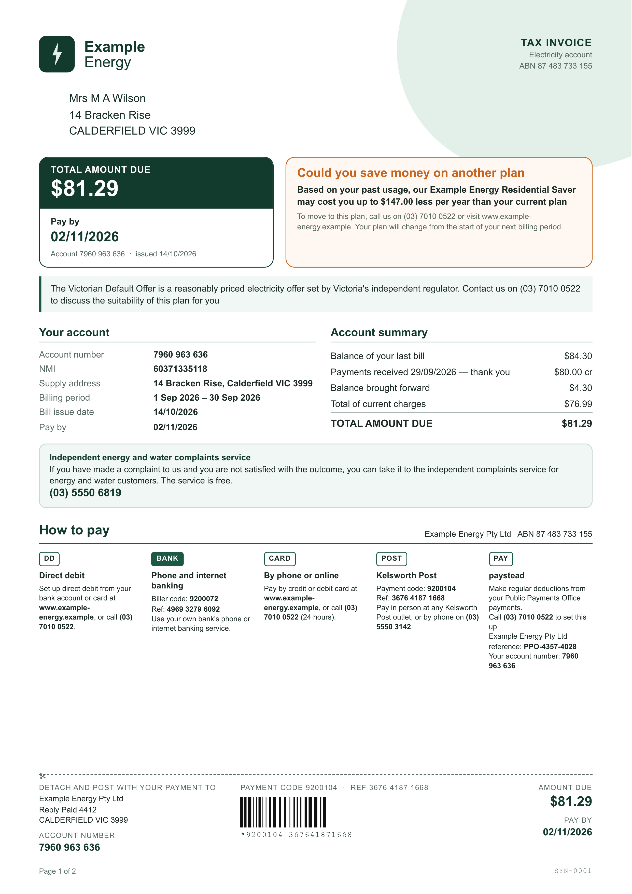
Demo · 1 min 14 s
Every colour answers to an ageing eye.
Contrast sensitivity falls by up to 83% by age 80, and WCAG's own AA level is calibrated to the typical eighty year old.
White grounds glare with cataract and macular degeneration.
In a search task, a blue-yellow colour cue costs an older eye about 2400ms more than a red-green one.
W3C. (2008). Web accessibility for older users: A literature review. w3.org/TR/wai-age-literature · W3C. (n.d.). Understanding SC 1.4.3: Contrast (minimum). WCAG 2.2.
Tamura, S., & Sato, K. (2020). Age-related changes in visual search. Scientific Reports, 10, 21328. · RNIB. (n.d.). How to choose colour and contrast for printed materials.
Everything behind one simple screen
each built from real regulation, with the sources written down
the rest are for later
Where the electricity bill comes from
Essential Services Commission. (2026). Energy Retail Code of Practice (Version 7), clause 63.
Essential Services Commission. (2022). Guideline: Greenhouse gas disclosure on electricity customers' bills.
Essential Services Commission. (2026, May). Victorian Default Offer 2026 to 27: Final decision.
Essential Services Commission. (2026). Greenhouse gas coefficient for electricity bills, 2026.
Department of Families, Fairness and Housing. (n.d.). Annual electricity concession.
Australian Energy Market Operator. (n.d.). NMI allocation list.
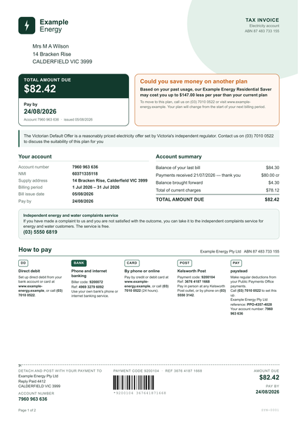
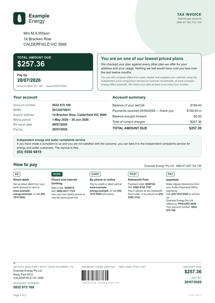
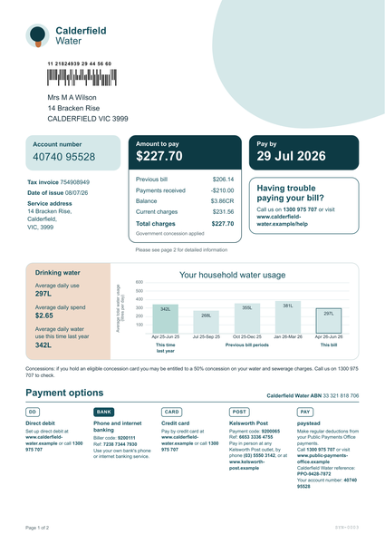
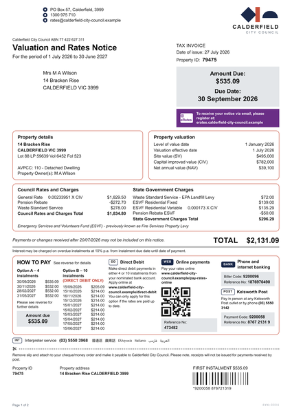
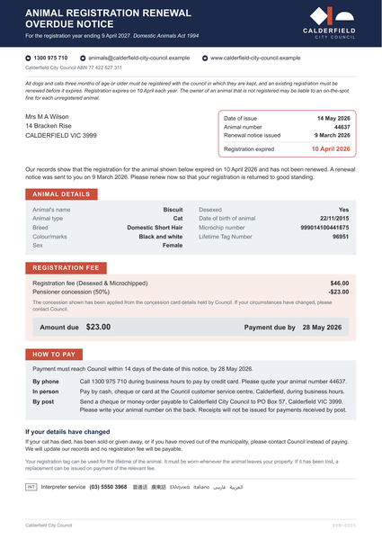
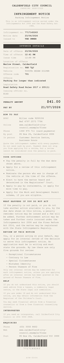
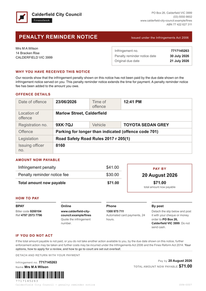
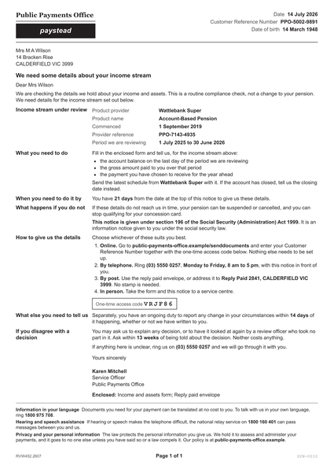
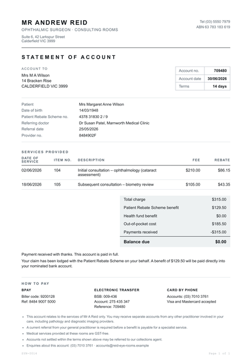
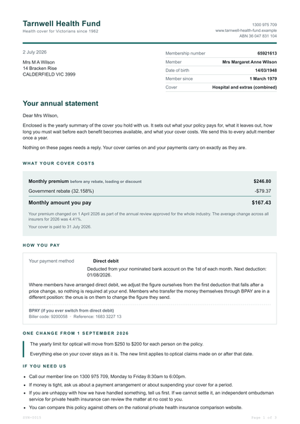
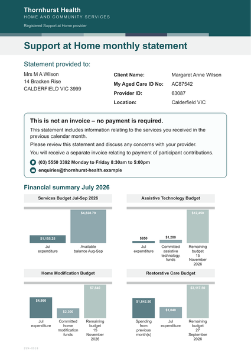
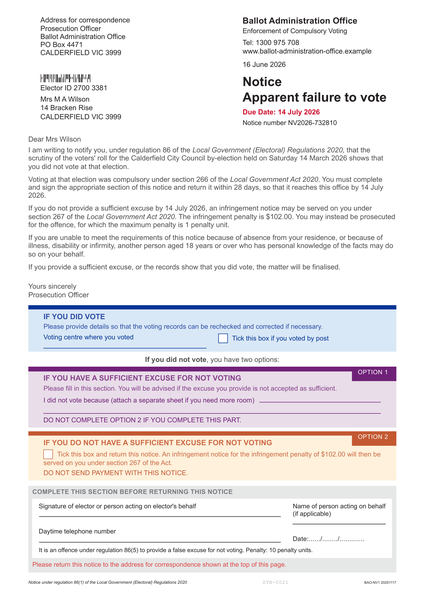
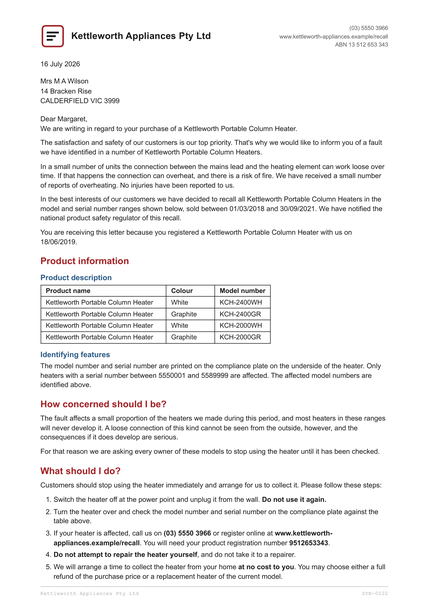
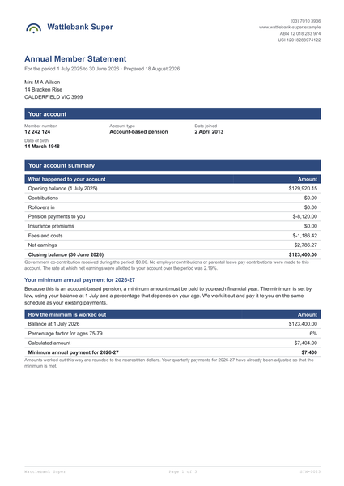
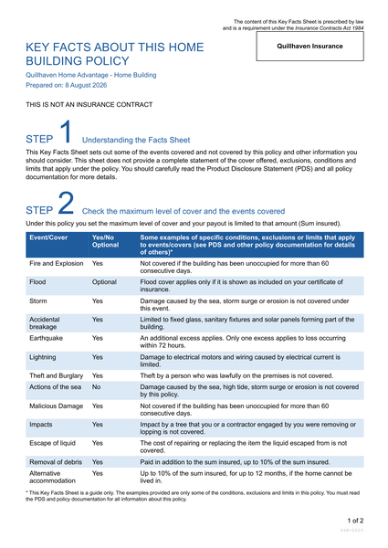
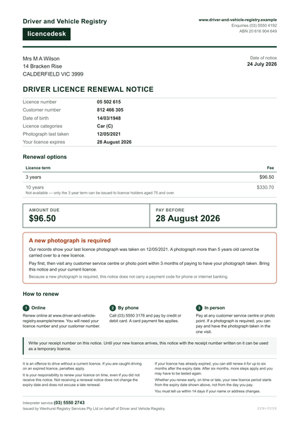
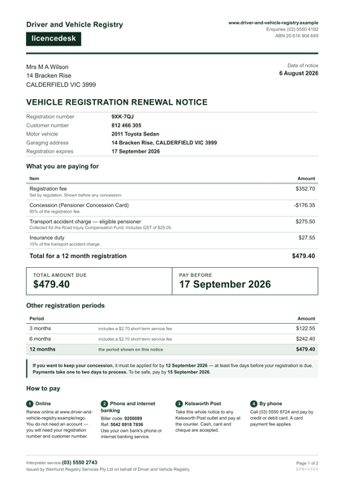
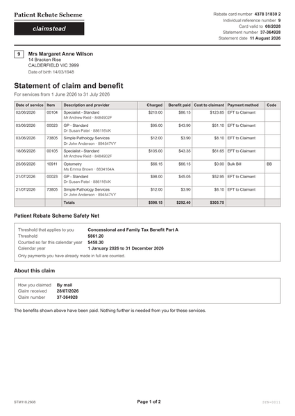
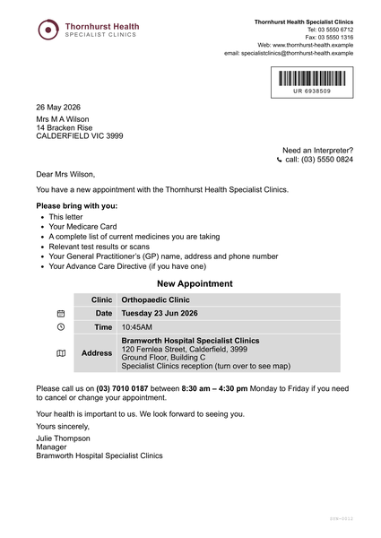
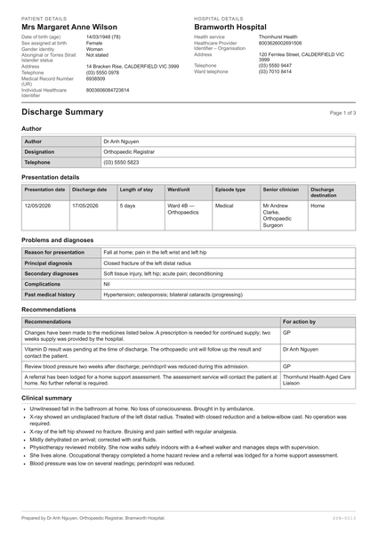
ground-truth.json · written by hand
{
"issuer": "Example Energy Pty Ltd",
"action_required": "Pay Example Energy",
"due_date": "2026-11-02",
"amount": 81.29,
"reference": "7960 963 636"
}
code compares
field by field
what the LLM returned · 18 September
{
"issuer": "Example Energy",
"action_required": "Pay Example Energy",
"due_date": "2026-11-02",
"amount": "$81.29",
"reference": "7960 963 636"
}
No person marks it. The test is exact.
It runs in bulk. 900 reads in one night.
Seven experiments so far. Everything else is held the same, so when two runs disagree the reason is one of these five.
run the same task several times, and let code compare the answers
One of Anthropic's five workflow patterns · parallelisation
Anthropic. (2024, December). Building effective agents. anthropic.com/engineering/building-effective-agents
Anthropic's method against hallucination
“Allow the model to say ‘I don't know’”
The model refuses to answer instead of guessing.
{ "key": "due_date", "status": "confirmed", "confidence": 0.99 }
{ "key": "reference", "status": "uncertain", "confidence": 0.78 }
Two real replies from gpt-5.6-luna. Anything but confirmed fails the whole letter.
Anthropic. (n.d.). Reduce hallucinations. Claude Docs. platform.claude.com
Wen, B., Yao, J., Feng, S., Xu, C., Tsvetkov, Y., Howe, B., & Wang, L. L. (2025). Know your limits: A survey of abstention in large language models. TACL. arxiv.org/abs/2407.18418
Voting and abstention together
| Letter type | Rounds | Right | terra |
|---|---|---|---|
| Electricity bill | 20 | 20 | 3 |
| Gas bill | 20 | 20 | 3 |
| Water bill | 20 | 20 | 4 |
| Animal registration overdue | 20 | 20 | 0 |
| Penalty reminder notice | 20 | 20 | 1 |
| Welfare information request | 20 | 20 | 0 |
| Specialist account statement | 20 | 20 | 0 |
| Private health statement | 20 | 20 | 0 |
| Letter type | Rounds | Right | terra |
|---|---|---|---|
| Failure to vote notice | 20 | 20 | 0 |
| Super member statement | 20 | 20 | 0 |
| Insurance key facts sheet | 20 | 20 | 0 |
| Driver licence renewal | 20 | 20 | 8 |
| Outpatient appointment | 20 | 20 | 9 |
| Dispensed medicine label | 20 | 20 | 0 |
| Home insurance renewal | 20 | 20 | 0 |
| All letters | 300 | 300 | 28 (9%) |
On the page: bank and post are two clean columns
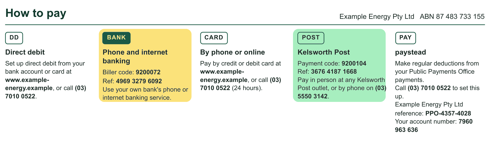
Which number sits under which heading is the whole meaning of this panel.
Give an LLM the text on the right and it is wrong before it starts.
After OCR (RapidOCR) · interleaved, line by line
How to pay Example Energy Pty LtdABN 87483733155 DD BANK CARD POST PAY Directdebit Phoneandinternet Byphoneoronline Kelsworth Post paystead banking Set up direct debit fromyour Pay by credit or debit card at Payment code:9200104 Makeregulardeductionsfrom bank account or card at Biller code:9200072 www.example- Ref:3676 4187 1668 your Public Payments Office www.example- Ref:496932796092 energy.example,or call(03) Pay in person at anyKelsworth payments. energy.example,or call(03) Useyour ownbank'sphone or 7010 0522 (24 hours). Post outlet,orbyphone on(03) Call(03)7010 0522 to set this 70100522. internet banking service. 5550 3142. up. Example Energy Pty Ltd reference:PP0-4357-4028 Your account number:7960 963636
It is not a hallucination problem. The input data is wrong.
per letter, on average
two luna reads, terra on 1 in 10 · AUD, list price
worst case
all five rounds, terra every time, no cache
Measured from the same 900 calls, not estimated. Every call's tokens and cost are stored beside the letter, so the number keeps itself current.
Talks to the client, tests with real people
Prototype EveryoneThe whole team, on purpose
Each of usFor our own module
Technical design JasonSettled before anyone writes code
JasonLetters HiruniEmail XceedVoiceWe are all full stack
Codeone ticket, one branchThe code and its tests,
written to Hiruni's testing rules
The tests
SaiAll of our code
SaiDeployment, our last line of defence
maintagged v0.1.0A tag means we can always go back to a version that worked
Finally, one more challenge. Our client has a much bigger vision: a fully automated agent butler. That is the long-term goal.
AI engineering is an empirical science. There is a lot of uncertainty, and there are governance problems to solve. So we keep our references and our data, and we take it step by step.
This semester, step one: get the data right. Thank you.
| Challenge | What we did |
|---|---|
| Our users cannot read a normal screen | Every colour answers to an ageing eye, and carries a reference |
| How do we know the LLM is right? | 26 synthetic letters with answer keys; code marks every read |
| The LLM sometimes reads it wrong | Voting: two reads compared by code, a third model to break ties |
| The LLM guesses when it is unsure | Abstention: not confirmed, not shown |
| Why not OCR? | The layout carries the meaning; OCR loses it |
| Five people, five different strengths | Every piece of work has a named reviewer, in a pull request |
| A vision bigger than one semester | Step by step. This semester, step one: get the data right |